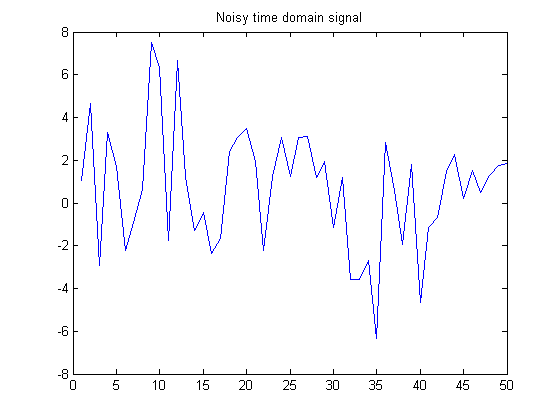

スペクトル解析のための FFT
この例では、スペクトル解析に対する関数 FFT の使用を示します。FFT の一般的な利用法は、時間領域のノイズの含まれる信号内に埋もれた信号の周波数成分を見つけることです。
最初にいくつかのデータを作成します。1000 Hz でサンプルされたデータとします。データに対して、t=0 から t=0.25 までの 1 ミリ秒間隔の時間軸を作成します。次に、50 Hz と 120 Hz の正弦波を含む信号 x を作成します。
t = 0:.001:.25; x = sin(2*pi*50*t) + sin(2*pi*120*t);
ノイズを含む信号 y を生成するために、標準偏差が 2 のいくつかのランダム ノイズを追加します。このノイズを含む信号 y をプロットして確認します。
y = x + 2*randn(size(t));
plot(y(1:50))
title('Noisy time domain signal')
 この信号を見て周波数成分を識別することが難しいのは明らかです。そのために、スペクトル解析がよく使われます。
ノイズを含む信号 y の離散フーリエ変換を求めることは簡単です。高速フーリエ変換 (FFT) を行うだけです。
Y = fft(y,251);
複素共役 (CONJ) を使用して、パワー スペクトル密度、つまり、さまざまな周波数でのエネルギーの測定値を計算します。最初の 127 点に対する周波数軸を作成し、結果のプロットに使用します。(点の残りは対称です。)
Pyy = Y.*conj(Y)/251; f = 1000/251*(0:127); plot(f,Pyy(1:128)) title('Power spectral density') xlabel('Frequency (Hz)')

200 Hz までの範囲に拡大してプロットします。50 Hz と 120 Hz にピークがあります。これらがオリジナルの信号の周波数です。
plot(f(1:50),Pyy(1:50)) title('Power spectral density') xlabel('Frequency (Hz)')